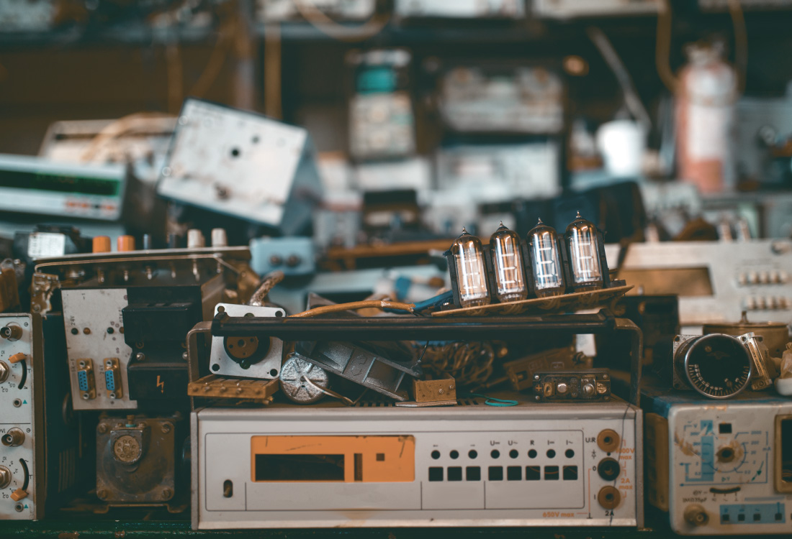

Registra tu equipo
Cuéntanos qué aparato tienes y en qué condición está.
Piura · Economía circular
Conecta tus aparatos en desuso con personas, talleres y puntos de acopio. Una nueva oportunidad empieza cerca de ti.

IMPACTO EN MOVIMIENTO
Cada equipo cuenta.
UNA RUTA PARA CADA EQUIPO
Elige el camino que mejor se ajusta al estado de tu aparato. Nosotros te ayudamos a encontrarlo.
Registra lo que ya no usas y describe en qué estado se encuentra.
Registrar equipo ↗02 / CONECTAREncuentra aparatos que pueden seguir siendo útiles para alguien más.
Explorar equipos ↗03 / ENTREGARUbica espacios que reciben residuos electrónicos en tu distrito.
Ver puntos ↗04 / APRENDERDecide mejor con información clara sobre manejo responsable.
Ir a educación ↗SENCILLO, COMO DEBE SER
De un cajón olvidado a una ruta responsable, en tres pasos.
Cuéntanos qué aparato tienes y en qué condición está.
Conecta con otra persona o encuentra un punto de acopio.
Forma parte de una Piura que aprovecha mejor sus recursos.
EMPIEZA CON LO QUE TIENES